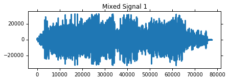

Strongly inspired by an article by Kevin Hughes (https://github.com/kevinhughes27?tab=repositories)
Today I am going to show you how we can do Blind Source Separation (BSS) using algorithms available in the Shogun Machine Learning Toolbox. What is Blind Source Separation? BSS is the separation of a set of source signals from a set of mixed signals.
My favorite example of this problem is known as the cocktail party problem where a number of people are talking simultaneously and we want to separate each persons speech so we can listen to it separately. Now the caveat with this type of approach is that we need as many mixtures as we have source signals or in terms of the cocktail party problem we need as many microphones as people talking in the room.
Let’s get started. This example is going to be in Python and the first thing we are going to need to do is load some audio files. To make things a bit easier further on in this example I’m going to wrap the basic scipy wav file reader and add some additional functionality. First I added a case to handle converting stereo wav files back into mono wav files and secondly this loader takes a desired sample rate and resamples the input to match. This is important because when we mix the two audio signals they need to have the same sample rate.
from scipy.io import wavfile
from scipy.signal import resample
def load_wav(filename,samplerate=44100):
# load file
rate, data = wavfile.read(filename)
# convert stereo to mono
if len(data.shape) > 1:
data = data[:,0]/2 + data[:,1]/2
# re-interpolate samplerate
ratio = float(samplerate) / float(rate)
data = resample(data, len(data) * ratio)
return samplerate, data.astype(np.int16)
Next we’re going to need a way to play the audio files we’re working with (otherwise this wouldn’t be very exciting at all would it?). In the next bit of code I’ve defined a wavPlayer class that takes the signal and the sample rate and then creates a nice HTML5 webplayer right inline with the notebook.
#import StringIO
import base64
import struct
from IPython.core.display import HTML
def wavPlayer(data, rate):
""" will display html 5 player for compatible browser
The browser need to know how to play wav through html5.
there is no autoplay to prevent file playing when the browser opens
Adapted from SciPy.io. and
github.com/Carreau/posts/blob/master/07-the-sound-of-hydrogen.ipynb
"""
buffer = six.moves.StringIO()
buffer.write(b'RIFF')
buffer.write(b'\x00\x00\x00\x00')
buffer.write(b'WAVE')
buffer.write(b'fmt ')
if data.ndim == 1:
noc = 1
else:
noc = data.shape[1]
bits = data.dtype.itemsize * 8
sbytes = rate*(bits // 8)*noc
ba = noc * (bits // 8)
buffer.write(struct.pack('<ihHIIHH', 16, 1, noc, rate, sbytes, ba, bits))
# data chunk
buffer.write(b'data')
buffer.write(struct.pack('<i', data.nbytes))
if data.dtype.byteorder == '>' or (data.dtype.byteorder == '=' and sys.byteorder == 'big'):
data = data.byteswap()
buffer.write(data.tostring())
# return buffer.getvalue()
# Determine file size and place it in correct
# position at start of the file.
size = buffer.tell()
buffer.seek(4)
buffer.write(struct.pack('<i', size-8))
val = buffer.getvalue()
src = """
<head>
<meta http-equiv="Content-Type" content="text/html; charset=utf-8">
<title>Simple Test</title>
</head>
<body>
<audio controls="controls" style="width:600px" >
<source controls src="data:audio/wav;base64,{base64}" type="audio/wav" />
Your browser does not support the audio element.
</audio>
</body>
""".format(base64=base64.encodestring(val))
display(HTML(src))
Now that we can load and play wav files we actually need some wav files! I found the sounds from Starcraft to be a great source of wav files because they’re short, interesting and remind me of my childhood. You can download Starcraft wav files here: http://wavs.unclebubby.com/computer/starcraft/ among other places on the web or from your Starcraft install directory (come on I know it’s still there).
Another good source of data (although lets be honest less cool) is ICA central and various other more academic data sets: http://perso.telecom-paristech.fr/~cardoso/icacentral/base_multi.html. Note that for lots of these data sets the data will be mixed already so you’ll be able to skip the next few steps.
Okay lets load up an audio file. I chose the Terran Battlecruiser saying “Good Day Commander”. In addition to the creating a wavPlayer I also plotted the data using Matplotlib (and tried my best to have the graph length match the HTML player length). Have a listen!
# change to the shogun-data directoy
import os
os.chdir('../files')
%pylab inline
import pylab as pl
import numpy as np
# load
fs1,s1 = load_wav('audio1.wav') # Terran Marine - "You want a piece of me, boy?"
# plot
pl.figure(figsize=(7,2))
pl.plot(s1)
pl.title('Signal 1')
pl.show()
# player
wavPlayer(s1, fs1)
Populating the interactive namespace from numpy and matplotlib
/usr/local/lib/python2.7/dist-packages/scipy/signal/signaltools.py:1741: VisibleDeprecationWarning: using a non-integer number instead of an integer will result in an error in the future
Y = zeros(newshape, 'D')
Now let’s load a second audio clip:
# load
fs2,s2 = load_wav('audio2.wav') # Terran Battlecruiser - "Good day, commander."
# plot
pl.figure(figsize=(6.75,2))
pl.plot(s2)
pl.title('Signal 2')
pl.show()
# player
wavPlayer(s2, fs2)

and a third audio clip:
# load
fs3,s3 = load_wav('audio3.wav') # Protoss Zealot - "My life for Aiur!"
# plot
pl.figure(figsize=(6.75,2))
pl.plot(s3)
pl.title('Signal 3')
pl.show()
# player
wavPlayer(s3, fs3)
Now we’ve got our audio files loaded up into our example program. The next thing we need to do is mix them together!
First another nuance - what if the audio clips aren’t the same lenth? The solution I came up with for this was to simply resize them all to the length of the longest signal, the extra length will just be filled with zeros so it won’t affect the sound.
The signals are mixed by creating a mixing matrix $A$ and taking the dot product of $A$ with the signals $S$.
Afterwards I plot the mixed signals and create the wavPlayers, have a listen!
# Adjust for different clip lengths
fs = fs1
length = max([len(s1), len(s2), len(s3)])
s1.resize((length,1), refcheck=False)
s2.resize((length,1), refcheck=False)
s3.resize((length,1), refcheck=False)
"""
The function numpy.c_ concatenates the numpy arrays given as input.
The method numpy_array.T is the transpose operation that allow us
to prepare an input source matrix of the right size (3, length),
according to the chosen mixing matrix (3,3).
"""
S = (np.c_[s1, s2, s3]).T
# Mixing Matrix
#A = np.random.uniform(size=(3,3))
#A = A / A.sum(axis=0)
A = np.array([[1, 0.5, 0.5],
[0.5, 1, 0.5],
[0.5, 0.5, 1]])
print 'Mixing Matrix:'
print A.round(2)
# Mixed Signals
X = np.dot(A,S)
# Exploring Mixed Signals
for i in range(X.shape[0]):
pl.figure(figsize=(6.75,2))
pl.plot((X[i]).astype(np.int16))
pl.title('Mixed Signal %d' % (i+1))
pl.show()
wavPlayer((X[i]).astype(np.int16), fs)
Mixing Matrix:
[[ 1. 0.5 0.5]
[ 0.5 1. 0.5]
[ 0.5 0.5 1. ]]


Now before we can work on separating these signals we need to get the data ready for Shogun. Thankfully this is pretty easy!
from shogun.Features import RealFeatures
# Convert to features for shogun
mixed_signals = RealFeatures((X).astype(np.float64))
Now lets unmix those signals!
In this example I’m going to use an Independent Component Analysis (ICA) algorithm called JADE. JADE is one of the ICA algorithms available in Shogun and it works by performing Aproximate Joint Diagonalization (AJD) on a 4th order cumulant tensor. I’m not going to go into a lot of detail on how JADE works behind the scenes but here is the reference for the original paper:
Cardoso, J. F., & Souloumiac, A. (1993). Blind beamforming for non-Gaussian signals. In IEE Proceedings F (Radar and Signal Processing) (Vol. 140, No. 6, pp. 362-370). IET Digital Library.
Note:
Shogun also has several other ICA algorithms including the Second Order Blind Identification (SOBI) algorithm, FFSep, JediSep, UWedgeSep and FastICA. All of the algorithms inherit from the ICAConverter base class and share some common methods for setting an intial guess for the mixing matrix, retrieving the final mixing matrix and getting/setting the number of iterations to run and the desired convergence tolerance. Some of the algorithms have additional getters for intermediate calculations, for example Jade has a method for returning the 4th order cumulant tensor while the “Sep” algorithms have a getter for the time lagged covariance matrices. Check out the source code on GitHub or the Shogun docs for more details!
from shogun.Converter import Jade
# Separating with JADE
jade = Jade()
signals = jade.apply(mixed_signals)
S_ = signals.get_feature_matrix()
A_ = jade.get_mixing_matrix()
A_ = A_ / A_.sum(axis=0)
print 'Estimated Mixing Matrix:'
print A_
Estimated Mixing Matrix:
[[ 0.25098835 0.49907993 0.24442146]
[ 0.26235007 0.25543257 0.53186567]
[ 0.48666158 0.2454875 0.22371287]]
Thats all there is to it!
Check out how nicely those signals have been separated and have a listen!
# Show separation results
# Separated Signal i
gain = 4000
for i in range(S_.shape[0]):
pl.figure(figsize=(6.75,2))
pl.plot((gain*S_[i]).astype(np.int16))
pl.title('Separated Signal %d' % (i+1))
pl.show()
wavPlayer((gain*S_[i]).astype(np.int16), fs)


BSS isn’t only useful for working with Audio, it is also useful for image processing and pre-processing other forms of high dimensional data. Have a google for ICA and machine learning if you want to learn more, but we will sure come back in the future on this topic!